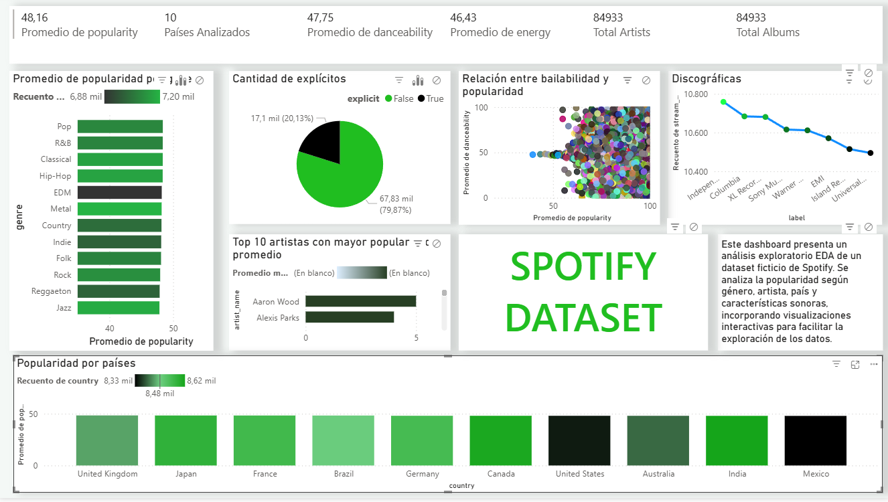

My First Power BI Dashboard - Spotify Analysis
[GRAPH 1] Dashboard overview.
This is my first project using Power BI. In this project, I explain the full process behind building an interactive dashboard from raw data. The dataset was obtained from Kaggle and can be accessed here. Credit to the original author for providing the dataset.
As a first step, I cleaned and standardized the dataset using my own Database Cleaner, removing duplicates, handling missing values, and fixing inconsistencies. After that, the cleaned data was imported into Power BI, where I designed the data model, created DAX measures, and built the final dashboard.
Below is a short video showcasing the dashboard interactions and main features.
[GRAPH 2] Dashboard interaction walkthrough.
Learning Power BI was a challenging but rewarding experience. I will keep practicing for better layouts and more dynamic dashboards. I currently prefer working with Power BI over Tableau. You can download the Power BI file below.
Download Power BI file (.pbix)Thank you for reading!